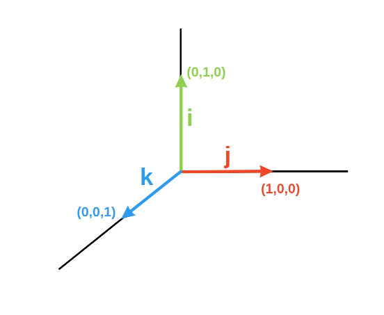
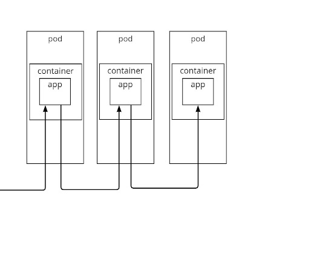
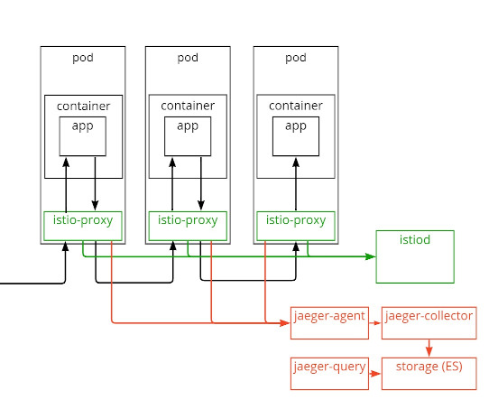
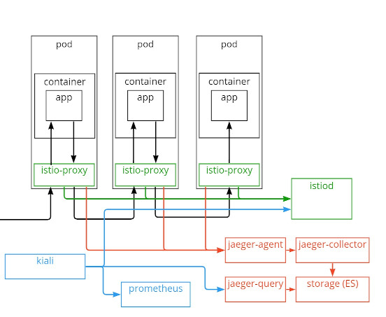

<!doctype html>
<html lang="en">
    <head>
        <meta charset="utf-8">
        <title>Kubernetes monitoring in 15 minutes</title>
        <link rel="stylesheet" href="./css/reveal.css">
        <link rel="stylesheet" href="./css/theme/black.css" id="theme">
        <link rel="stylesheet" href="./css/highlight/zenburn.css">
        <link rel="stylesheet" href="./css/print/paper.css" type="text/css" media="print">

    </head>
    <body>

        <div class="reveal">
            <div class="slides"><section  data-markdown><script type="text/template">
## How to setup monitoring in kubernetes under 15 minutes

</script></section><section  data-markdown><script type="text/template">

# Situation

* An application built in microservice architecture... <!-- .element: class="fragment" -->
* ...built by juniors<!-- .element: class="fragment" -->
* It seems to work fine...<!-- .element: class="fragment" -->
* ...but has absolutely no logs<!-- .element: class="fragment" -->
* It gets extremely slow on production...<!-- .element: class="fragment" -->
* ...and we have no way to replicate this on test env<!-- .element: class="fragment" -->

</script></section><section  data-markdown><script type="text/template">

# \*\*\* stack

Three-letter stack for monitoring?
<div>
    <!-- .element: class="fragment" -->
    <!-- .element: class="fragment" -->
</div>

</script></section><section  data-markdown><script type="text/template">

# IJK stack


</script></section><section ><section data-markdown><script type="text/template">
# 'I' is for Istio

## What?

Istio extends Kubernetes to establish a programmable, application-aware network using the powerful Envoy service proxy. <!-- .element: class="fragment" -->

<div>see:
* [Istio](https://istio.io)
</div><!-- .element: class="fragment" -->

</script></section><section data-markdown><script type="text/template">
# 'I' is for Istio

## What?


</script></section><section data-markdown><script type="text/template">
# 'I' is for Istio

## What?


</script></section><section data-markdown><script type="text/template">
# 'I' is for Istio

## How?

```
curl -L https://istio.io/downloadIstio | sh -
istio-1.XX.X/bin/istioctl install -y
kubectl label namespace ${namespace} istio-injection=enabled
kubectl -n ${namespace} rollout restart `kubectl -n ${namespace} get deploy -o name`
```
see:
* [Istio - getting started](https://istio.io/latest/docs/setup/getting-started/)

</script></section></section><section ><section data-markdown><script type="text/template">
# 'J' is for Jaeger

## What?

<div>
Jaeger is a distributed tracing system released as open source by Uber Technologies. It is used for monitoring and troubleshooting microservices based distributed systems
</div><!-- .element: class="fragment" -->
<div>see:
* [Jaeger](https://www.jaegertracing.io/)
</div><!-- .element: class="fragment" -->

</script></section><section data-markdown><script type="text/template">
# 'J' is for Jaeger

## What?


</script></section><section data-markdown><script type="text/template">
# 'J' is for Jaeger

## What?


</script></section><section data-markdown><script type="text/template">
# 'J' is for Jaeger

## How?

```
kubectl apply -f https://raw.githubusercontent.com/istio/istio/release-1.XX/samples/addons/jaeger.yaml
istio-1.XX.X/bin/istioctl install -y \
  --set meshConfig.defaultConfig.tracing.zipkin.address=jaeger-collector.istio-system:9411 \
  --set meshConfig.defaultConfig.tracing.sampling=100.0
kubectl -n ${namespace} rollout restart `kubectl -n ${namespace} get deploy -o name`
```
```
istio-1.XX.X/bin/istioctl dashboard jaeger
```
see:
* [Istio - jaeger](https://istio.io/latest/docs/tasks/observability/distributed-tracing/jaeger/)
* [Jaeger - operator](https://www.jaegertracing.io/docs/1.34/operator/)

</script></section></section><section ><section data-markdown><script type="text/template">
# 'K' is for Kiali

Kiali is a management console for Istio service mesh. Kiali can be quickly installed as an Istio add-on, or trusted as a part of your production environment.

<div>
see:
* [Kiali](https://kiali.io/)
</div><!-- .element: class="fragment" -->

</script></section><section data-markdown><script type="text/template">
# 'K' is for Kiali

## What?


</script></section><section data-markdown><script type="text/template">
# 'K' is for Kiali

## What?


## How?

```
kubectl apply -f https://raw.githubusercontent.com/istio/istio/release-1.13/samples/addons/prometheus.yaml
kubectl apply -f https://raw.githubusercontent.com/istio/istio/release-1.13/samples/addons/kiali.yaml

```
```
istio-1.XX.X/bin/istioctl dashboard kiali
```
see:
* [Istio - kiali](https://istio.io/latest/docs/tasks/observability/kiali/)
</script></section></section><section ><section data-markdown><script type="text/template">
# What's next?


</script></section><section data-markdown><script type="text/template">
# What's next?

Istio
* not just monitoring
* traffic management<!-- .element: class="fragment" -->
* telemetry<!-- .element: class="fragment" -->
* security<!-- .element: class="fragment" -->

</script></section><section data-markdown><script type="text/template">
# What's next?

Jaeger
* Span propagation
* Connect spans within single flow<!-- .element: class="fragment" -->
* Log traceId<!-- .element: class="fragment" -->

</script></section><section data-markdown><script type="text/template">
# What's next?

Dashboards
* Expose jaeger/kiali dashboard

</script></section></section><section  data-markdown><script type="text/template">
# Thank you

see:
* https://github.com/RemboL/ijk-stack
* https://RemboL.github.io/ijk-stack
</script></section></div>
        </div>

        <script src="./lib/js/head.min.js"></script>
        <script src="./js/reveal.js"></script>

        <script>
            function extend() {
              var target = {};
              for (var i = 0; i < arguments.length; i++) {
                var source = arguments[i];
                for (var key in source) {
                  if (source.hasOwnProperty(key)) {
                    target[key] = source[key];
                  }
                }
              }
              return target;
            }

            // Optional libraries used to extend on reveal.js
            var deps = [
              { src: './lib/js/classList.js', condition: function() { return !document.body.classList; } },
              { src: './plugin/markdown/marked.js', condition: function() { return !!document.querySelector('[data-markdown]'); } },
              { src: './plugin/markdown/markdown.js', condition: function() { return !!document.querySelector('[data-markdown]'); } },
              { src: './plugin/highlight/highlight.js', async: true, callback: function() { hljs.initHighlightingOnLoad(); } },
              { src: './plugin/zoom-js/zoom.js', async: true },
              { src: './plugin/notes/notes.js', async: true },
              { src: './plugin/math/math.js', async: true }
            ];

            // default options to init reveal.js
            var defaultOptions = {
              controls: true,
              progress: true,
              history: true,
              center: true,
              transition: 'default', // none/fade/slide/convex/concave/zoom
              dependencies: deps
            };

            // options from URL query string
            var queryOptions = Reveal.getQueryHash() || {};

            var options = {"transition":"fade"};
            options = extend(defaultOptions, options, queryOptions);
        </script>


        <script>
            Reveal.initialize(options);
        </script>
    </body>
</html>
